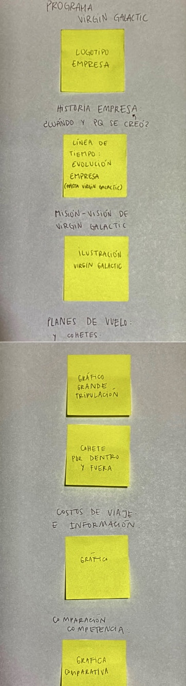

Storyboard grupal
Presenten su storyboard grupal: Un esquema de papel al que se le tomó una fotografía, que luego puede ser ajustada en Photoshop o Photopea, así cada indicación resulta legible; es muy recomendable que en cada post-it en el storyboard se pueda leer claramente lo que desean mostrar.
